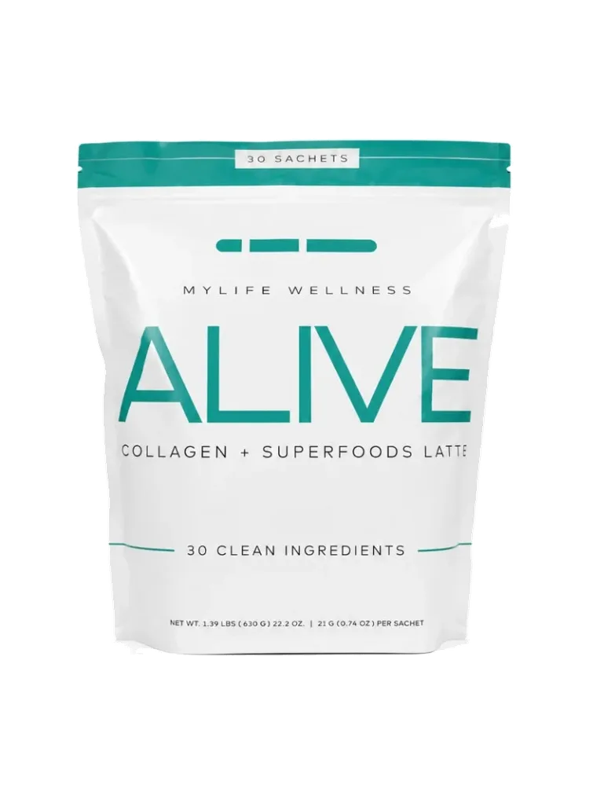
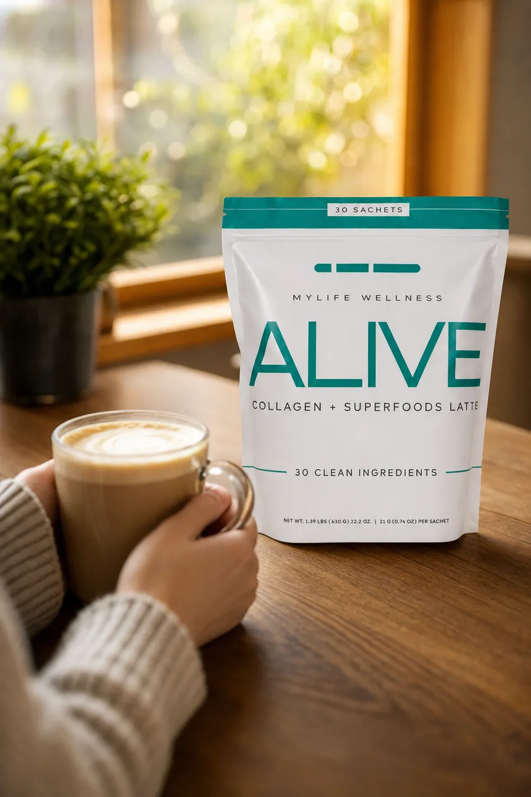
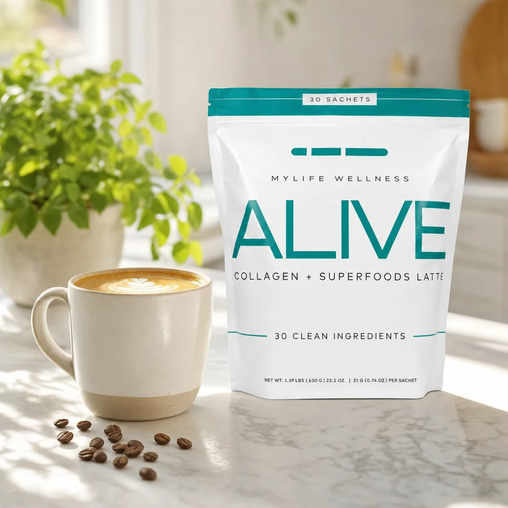

Clean, lasting energy
Premium Arabica coffee with coconut oil and cordyceps, for focus without the spike and crash.
Free sample · We ship it to you
ALIVE is a collagen and superfoods latte from MyLife Wellness. Real Arabica coffee, 30 clean ingredients, and one sachet that dissolves in hot water in about a minute. Tell us where to send it and a sample is on its way. No card, no subscription.
Your sample is covered by your Conectiv rep. There is no card field on the form.

Why one cup does more
Generic coffee stops at caffeine. ALIVE goes further, combining premium taste with functional wellness support in the same 60 seconds you already spend making coffee.
Premium Arabica coffee with coconut oil and cordyceps, for focus without the spike and crash.
A blend of superfoods, antioxidants and A and B vitamins helps support digestion, immunity and vitality.
Hydrolyzed collagen supports skin elasticity, hair strength and joint health, in the cup you already drink.
Single serve sachets. No brewing, no machine, nothing to clean. It travels in a bag or a glovebox.
What each one actually does
Most coffee has one active ingredient and it wears off by eleven. These are the six doing the work in ALIVE, and what each one is there for.
Hydrolyzed marine collagen, the same peptides people buy on their own and stir into a drink. Here it is already in the cup, at roughly 8 g of protein a serving, supporting skin elasticity, hair and nail strength and joint comfort.
A functional mushroom used for oxygen utilisation and endurance. It is the reason the lift from this cup arrives level and stays level, instead of peaking at nine and collapsing at two.
An adaptogen with a long history of supporting mental clarity and helping the body handle everyday stress. Alongside the coffee it sharpens the focus rather than the jitters.
An antioxidant blend, pumpkin powder among them, carrying the nutrition side of the cup. This is the part supporting digestion, immune function and general vitality while you are simply having your coffee.
A non dairy creamer built from coconut oil, which is why the cup is smooth on its own. Nothing to pour in, and no sugar arriving with the thing you would have poured in.
Everyday vitamin support folded into the same sachet. The only supplement routine anyone actually sticks to is the one attached to a habit they already have.
And then there is the taste
Most wellness coffees taste earthy, and most people drinking one have quietly made peace with that. ALIVE starts from premium Arabica and finishes creamy off the coconut oil, so it drinks like a cappuccino. Nothing to mask, no holding your nose.
This is the part a sample settles faster than a paragraph can, which is rather the point of sending you one.

Nobody needs another thing to remember. ALIVE works because it replaces something you already do every single morning, rather than adding a step to it.
Whether you are a professional, a parent, an entrepreneur or all three at once, the whole routine is one sachet and 6 to 8 ounces of hot water.
No brewing. No complicated steps. Barista quality taste and functional benefits in under a minute.
The comparison
Same minute of your morning. Very different cup.
Simple ritual

No catch, here is the whole thing
Three steps, and none of them involve a credit card.
Your name, your email and the address you want it mailed to. That is the entire form, and it takes under a minute.
A real person, not a warehouse. Your Conectiv rep covers the sample and puts it in the mail, then sends you a note to say it is on the way.
Make it, taste it, see how the morning goes. If you love it there is a link to get more. If you do not, nothing happens. You keep the sample either way.
Before you ask
Actually free. There is no card field on the form, so there is nothing to bill. Your Conectiv rep covers the cost of the sample themselves because they would rather you taste it than read about it.
The honest version: reps do this because most people who try ALIVE want more of it. If that is you, there is a link to order. If it is not, you keep the sample and that is the end of it.
Yes. ALIVE is built on real premium Arabica coffee, so it wakes you up like coffee does. The difference is the coconut oil, cordyceps and ginseng alongside it, which is why the energy tends to stay level instead of spiking.
A creamy cappuccino. The coconut oil creamer is already in the sachet, so it is smooth without milk, sugar or syrup.
It contains fish, from the marine collagen. It has no added sugar, and it is non GMO and gluten free. If you are pregnant, nursing, or taking medication, check with your doctor before adding any supplement.
It goes out by regular mail from your rep, so figure a few days to about a week depending on where you are. They will message you when it ships.
We will put a sachet of ALIVE in the mail and you can decide for yourself whether it is the best cup of coffee you have had. Tell us where to send it.
These statements have not been evaluated by the Food and Drug Administration. This product is not intended to diagnose, treat, cure or prevent any disease. Individual results may vary. ALIVE is a product of MyLife Wellness. Samples are provided and shipped by an independent Conectiv representative. One sample per household, while supplies last.